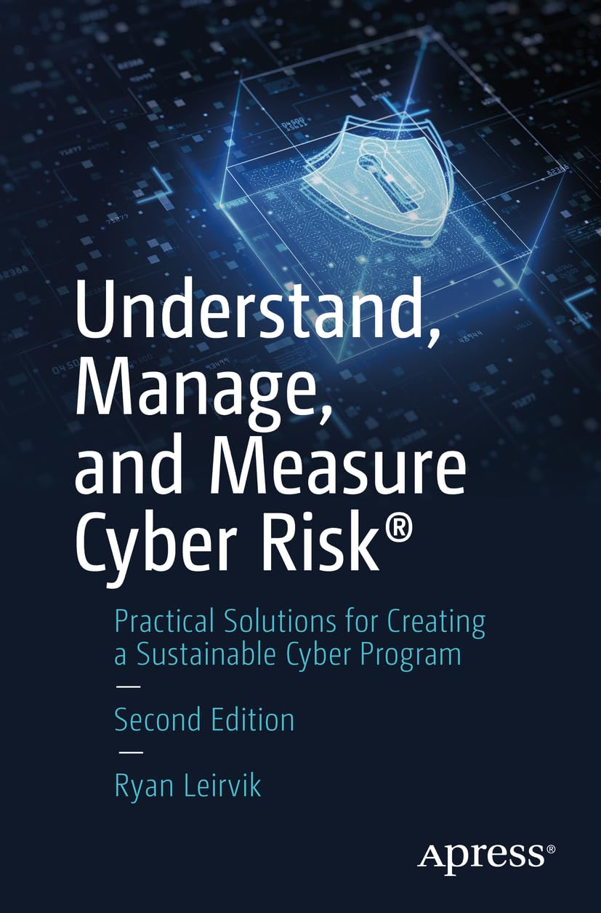

Corporate Governance: A Board Director's Pocket Guide, 4th Edition
Leadership, Diligence, and Wisdom
Domestic Usage
International Usage
Highly Recommended Complementary Book

Understand, Manage, and Measure Cyber Risk®: Practical Solutions for Creating a Sustainable Cyber Program
This highly recommended book complements Corporate Governance: A Board Director's Pocket Guide, 4th Edition by providing practical guidance for building, managing, and sustaining an effective enterprise cyber-risk program.
View on AmazonAbout This Book
Corporate Governance: A Board Director's Pocket Guide, 4th Edition delivers practical, concise guidance for today's board members navigating an increasingly complex environment.
Boards face heightened scrutiny over Artificial Intelligence oversight, cybersecurity resilience, geopolitical and supply chain risks, talent and human capital management, and evolving sustainability expectations. At the same time, directors must manage intense schedules, shareholder activism, regulatory complexity, and rapid technological change.
This updated 4th Edition equips directors and executives with clear explanations of core governance principles, board responsibilities, risk oversight, committee best practices, and emerging trends. Whether you are a new or seasoned board member, this compact handbook provides immediately actionable insights to strengthen oversight, improve decision-making, and fulfill your fiduciary duties in the AI-driven, high-risk environment of 2026.
Key Updates in the 4th Edition
- AI Governance and Board-Level Technology Oversight — Dedicated chapter covering the EU AI Act, NIST AI RMF, model hallucination risk, deepfake threats, and AI disclosure obligations.
- Cybersecurity as a Core Enterprise Risk — SEC cybersecurity disclosure rules, third-party risk, and board-level incident response, anchored by the Equifax and CrowdStrike case studies.
- Modern Board Skills Matrices and Director Refreshment — 2026 best practices for skills gap analysis, identifying critical expertise, and governance-driven board composition.
- Updated Risk Management and Succession Planning Guidance — Geopolitical risk, supply chain disruption, human capital risk, and emergency CEO succession frameworks.
- Practical Lessons from Recent High-Profile Cases — Seven full case studies: Enron, WorldCom, Wells Fargo, Boeing 737 MAX, Equifax, FTX, and OpenAI — each with board-level governance lessons.
- Global Governance Comparison — New chapter covering U.S., UK, Germany (co-determination), Japan (keiretsu), China (SOEs), India, and EU CSRD double materiality.
- SEC Clawback Rules, Universal Proxy, and ESG Materiality — All updated for the 2026 regulatory landscape.
What's Inside
The Pocket Guide is organized into three parts, five appendices, and a comprehensive glossary:
- Part I — Governance Overview: Governance theory, board characteristics, director roles, celebrity directors, board effectiveness, committees, and mentoring.
- Part II — Governance Performance: Organizational models, best and poor governance practices, compliance, governance measures, risk management, quality, capability maturity, and business intelligence.
- Part III — Governance Trends and Globalization: Emerging trends, dedicated AI Governance chapter, and global governance comparison across six jurisdictions.
- Appendices: Director Question Frameworks (10 domains), Crisis Governance Playbook (5 scenarios), Board Governance Maturity Model, Board Director Toolkit (calendar, charter outline, CEO evaluation template, independence checklist), and the "Y" Governance Frameworks.
- Glossary: 80+ governance terms including Board Capture, Decision Velocity, Ethics Waiver, Governance Debt, and Materiality (ESG).
Edition
Print & Kindle · Available on Amazon ↗
About the Authors
Clear. Concise. Current.
The essential pocket guide every board director needs in 2026.
Get It on Amazon